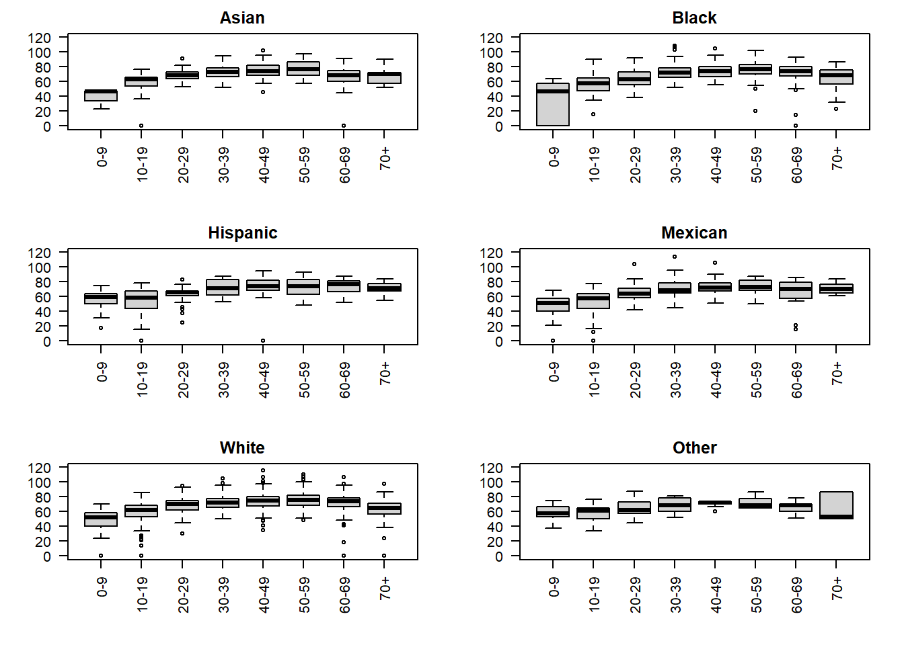
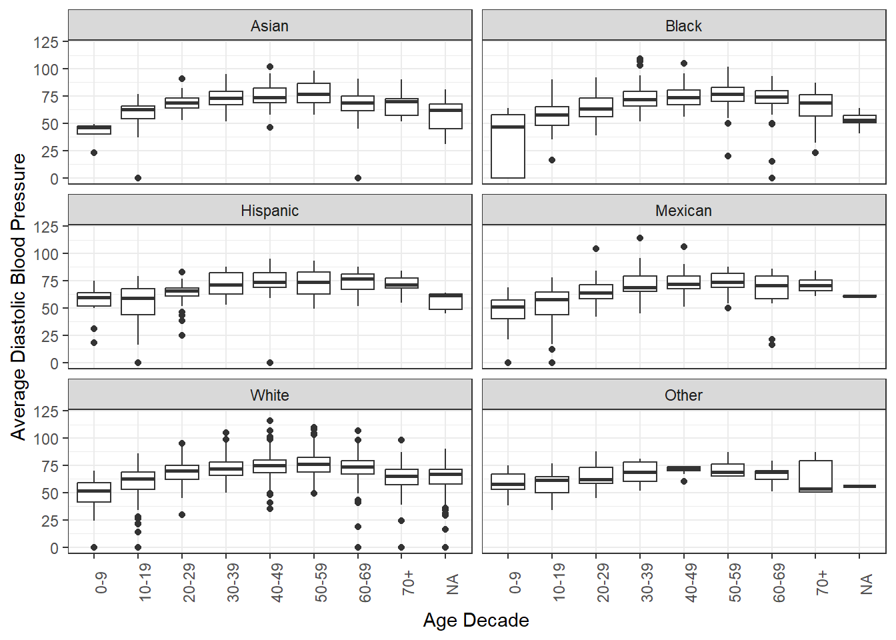
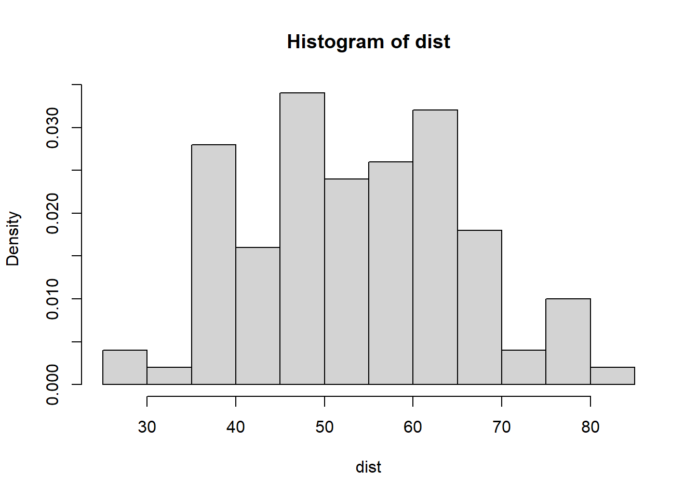
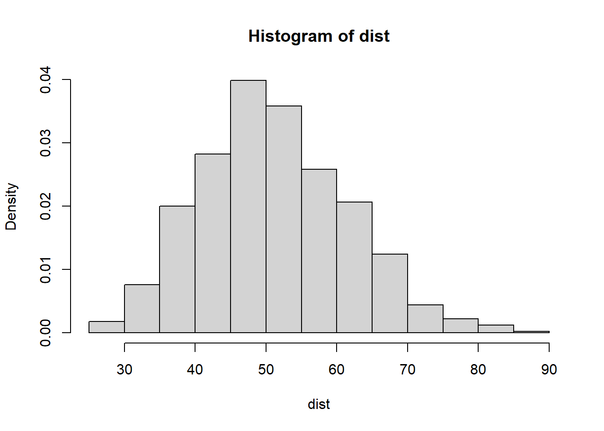
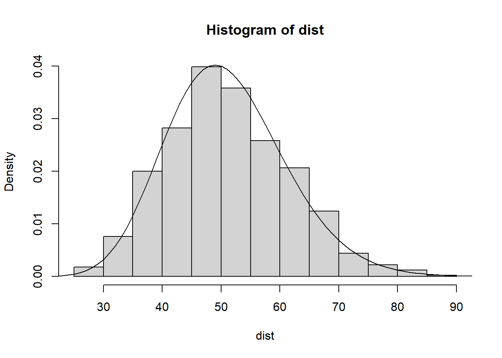

library(NHANES)
data(NHANES)
library(dplyr)
library(table1)Warning: package 'table1' was built under R version 4.4.3library(ggplot2)Warning: package 'ggplot2' was built under R version 4.4.3nh11 = NHANES |> filter(SurveyYr == "2011_12")Retrieve this quarto document and place a copy in your bst260 repository.
You can find a copy at https://tinyurl.com/260pset04 and retrieve by curl or wget, or by any other method.
Call it pset04.qmd.
You will be editing the document directly to solve exercise 6, so use the document to present your solutions to all the problems. Place your text and executable code, properly marked up, after each query for each exercise. You might use a horizontal rule to help discriminate your material from the text of the problem set.
Place your name as the author of the solutions in the yaml header above.
When you have finished editing this document with your solutions place it and your compiled html in the solutions folder of your bst260 repository.
The NHANES package on CRAN includes a dataset called “NHANES” that addresses issues of sampling to permit direct statistical analyses.
Example analyses of the weighted survey data assembled by the National Center for Health Statistics are available. An example is here; also of interest is the nhanesA package, which leverages a containerized relational database. A publication is available.
Here we use the ‘resampled’ version for simplicity.
Let’s get the necessary software. Use install.packages for any packages you are missing.
library(NHANES)
data(NHANES)
library(dplyr)
library(table1)Warning: package 'table1' was built under R version 4.4.3library(ggplot2)Warning: package 'ggplot2' was built under R version 4.4.3nh11 = NHANES |> filter(SurveyYr == "2011_12")The table1 package/function provides a powerful approach to producing summary statistics. We will focus on the measured quantity “diastolic blood pressure” as obtained by averaging several repeat measures for each participant visit.
table1(~BPDiaAve|Race3, data=nh11 |> filter(Sex=="female"))| Asian (N=147) |
Black (N=292) |
Hispanic (N=182) |
Mexican (N=213) |
White (N=1588) |
Other (N=73) |
Overall (N=2495) |
|
|---|---|---|---|---|---|---|---|
| BPDiaAve | |||||||
| Mean (SD) | 66.5 (13.1) | 67.4 (15.4) | 65.7 (13.8) | 63.2 (16.2) | 68.2 (12.9) | 63.1 (12.4) | 67.3 (13.6) |
| Median [Min, Max] | 67.0 [0, 98.0] | 69.0 [0, 103] | 67.0 [0, 95.0] | 64.0 [0, 94.0] | 69.0 [0, 108] | 61.0 [34.0, 88.0] | 69.0 [0, 108] |
| Missing | 25 (17.0%) | 51 (17.5%) | 37 (20.3%) | 53 (24.9%) | 171 (10.8%) | 20 (27.4%) | 357 (14.3%) |
table1(~BPDiaAve|Race3, data=nh11 |> filter(Sex=="male"))| Asian (N=141) |
Black (N=297) |
Hispanic (N=168) |
Mexican (N=267) |
White (N=1547) |
Other (N=85) |
Overall (N=2505) |
|
|---|---|---|---|---|---|---|---|
| BPDiaAve | |||||||
| Mean (SD) | 72.1 (14.2) | 67.1 (15.9) | 68.4 (15.0) | 64.0 (17.5) | 70.5 (14.6) | 65.8 (11.5) | 69.3 (15.2) |
| Median [Min, Max] | 73.0 [0, 102] | 68.5 [0, 109] | 69.0 [0, 90.0] | 66.0 [0, 114] | 72.0 [0, 116] | 68.0 [37.0, 87.0] | 71.0 [0, 116] |
| Missing | 21 (14.9%) | 53 (17.8%) | 40 (23.8%) | 46 (17.2%) | 186 (12.0%) | 16 (18.8%) | 362 (14.5%) |
Write and run the dplyr code to reproduce the means, standard deviations and number of missing values for BPDiaAve in each table. The result should have column names “Sex”, “Race3”, “mean”, “sd”, “nmiss”. Records for females should come first and rows should be sorted by race within gender.
library(dplyr)
nh11 |>
group_by(Sex, Race3) |>
summarize(
mean = mean(BPDiaAve, na.rm = TRUE),
sd = sd(BPDiaAve, na.rm = TRUE),
nmiss = sum(is.na(BPDiaAve))
) |>
arrange(desc(Sex), Race3)`summarise()` has grouped output by 'Sex'. You can override using the `.groups`
argument.# A tibble: 12 × 5
# Groups: Sex [2]
Sex Race3 mean sd nmiss
<fct> <fct> <dbl> <dbl> <int>
1 male Asian 72.1 14.2 21
2 male Black 67.1 15.9 53
3 male Hispanic 68.4 15.0 40
4 male Mexican 64.0 17.5 46
5 male White 70.5 14.6 186
6 male Other 65.8 11.5 16
7 female Asian 66.5 13.1 25
8 female Black 67.4 15.4 51
9 female Hispanic 65.7 13.8 37
10 female Mexican 63.2 16.2 53
11 female White 68.2 12.9 171
12 female Other 63.1 12.4 20Something very implausible is present in the data. Describe it and reproduce the table1 results and dplyr summaries after “fixing” it.
There is 0 values for the blood pressure which is not possible.
# Create a fixed version of the data
nh11_fixed <- nh11 |>
mutate(BPDiaAve = ifelse(BPDiaAve == 0, NA, BPDiaAve))
# Reproduce table1
table1(~BPDiaAve | Race3,
data = nh11_fixed |> filter(Sex == "female"))| Asian (N=147) |
Black (N=292) |
Hispanic (N=182) |
Mexican (N=213) |
White (N=1588) |
Other (N=73) |
Overall (N=2495) |
|
|---|---|---|---|---|---|---|---|
| BPDiaAve | |||||||
| Mean (SD) | 67.1 (11.7) | 68.6 (12.8) | 66.1 (12.7) | 63.6 (15.4) | 68.6 (11.6) | 63.1 (12.4) | 67.9 (12.3) |
| Median [Min, Max] | 67.0 [23.0, 98.0] | 69.0 [15.0, 103] | 67.0 [31.0, 95.0] | 64.0 [12.0, 94.0] | 69.0 [14.0, 108] | 61.0 [34.0, 88.0] | 69.0 [12.0, 108] |
| Missing | 26 (17.7%) | 55 (18.8%) | 38 (20.9%) | 54 (25.4%) | 181 (11.4%) | 20 (27.4%) | 374 (15.0%) |
table1(~BPDiaAve | Race3,
data = nh11_fixed |> filter(Sex == "male"))| Asian (N=141) |
Black (N=297) |
Hispanic (N=168) |
Mexican (N=267) |
White (N=1547) |
Other (N=85) |
Overall (N=2505) |
|
|---|---|---|---|---|---|---|---|
| BPDiaAve | |||||||
| Mean (SD) | 72.7 (12.6) | 67.7 (14.7) | 68.9 (13.7) | 64.8 (15.9) | 71.2 (12.9) | 65.8 (11.5) | 69.9 (13.7) |
| Median [Min, Max] | 73.0 [37.0, 102] | 69.0 [16.0, 109] | 69.0 [16.0, 90.0] | 66.0 [19.0, 114] | 72.0 [16.0, 116] | 68.0 [37.0, 87.0] | 71.0 [16.0, 116] |
| Missing | 22 (15.6%) | 55 (18.5%) | 41 (24.4%) | 49 (18.4%) | 199 (12.9%) | 16 (18.8%) | 382 (15.2%) |
# Reproduce dplyr summaries
nh11_fixed |>
group_by(Sex, Race3) |>
summarize(
mean = mean(BPDiaAve, na.rm = TRUE),
sd = sd(BPDiaAve, na.rm = TRUE),
nmiss = sum(is.na(BPDiaAve))
) |>
arrange(desc(Sex), Race3)`summarise()` has grouped output by 'Sex'. You can override using the `.groups`
argument.# A tibble: 12 × 5
# Groups: Sex [2]
Sex Race3 mean sd nmiss
<fct> <fct> <dbl> <dbl> <int>
1 male Asian 72.7 12.6 22
2 male Black 67.7 14.7 55
3 male Hispanic 68.9 13.7 41
4 male Mexican 64.8 15.9 49
5 male White 71.2 12.9 199
6 male Other 65.8 11.5 16
7 female Asian 67.1 11.7 26
8 female Black 68.6 12.8 55
9 female Hispanic 66.1 12.7 38
10 female Mexican 63.6 15.4 54
11 female White 68.6 11.6 181
12 female Other 63.1 12.4 20R’s built-in modeling functions can save a lot of filtering and summarization activity. To estimate average diastolic blood pressures for combinations of race and gender, we can use
lm1 = lm(BPDiaAve~Race3*Sex-1, data=nh11, na.action=na.omit)
lm1$coef Race3Asian Race3Black Race3Hispanic
66.532787 67.448133 65.682759
Race3Mexican Race3White Race3Other
63.175000 68.153846 63.056604
Sexmale Race3Black:Sexmale Race3Hispanic:Sexmale
5.608880 -5.913570 -2.916638
Race3Mexican:Sexmale Race3White:Sexmale Race3Other:Sexmale
-4.833654 -3.217539 -2.839397 The syntax y ~ a * b - 1 for numerical y and factor variables a and b is described as fitting “first-order interactions”. Subgroups of individuals are formed for every combination of factor levels, and the mean value of y is computed for each subgroup. The -1 suppresses an intercept term.
R uses a peculiar naming convention for the estimated parameters. Race3Asian is used to show that the factor level for Race3 is Asian. Sexmale has a coefficient. This indicates to us that the ‘reference’ sex is female. Finally colon is used for combinations of factor values. We can recover the mean value for Black males by adding the coefficients for Race3Black, Sexmale, and Race3Black:Sexmale.
Create the compact estimates using the version of the data “repaired” in Exercise 2 and verify that the estimates from lm recover the dplyr summaries.
# Fit model using repaired data
lm1 <- lm(BPDiaAve ~ Race3 * Sex - 1,
data = nh11_fixed,
na.action = na.omit)
lm1$coef Race3Asian Race3Black Race3Hispanic
67.082645 68.586498 66.138889
Race3Mexican Race3White Race3Other
63.572327 68.638237 63.056604
Sexmale Race3Black:Sexmale Race3Hispanic:Sexmale
5.665255 -6.553405 -2.890758
Race3Mexican:Sexmale Race3White:Sexmale Race3Other:Sexmale
-4.407306 -3.077973 -2.895771 Here is classic R list manipulation and plotting code:
par(mfrow=c(3,2),las=2,mar=c(5,4,2,2))
ss = split(nh11, nh11$Race3)
tt = lapply(names(ss), function(x) {d = ss[[x]];
boxplot(split(d$BPDiaAve, d$AgeDecade), main=x, ylim=c(0,120))})
Write and run the ggplot2 code to produce a similar display.
library(ggplot2)
ggplot(nh11, aes(x = AgeDecade, y = BPDiaAve)) +
geom_boxplot() +
facet_wrap(~ Race3, ncol = 2) +
coord_cartesian(ylim = c(0, 120)) +
labs(
x = "Age Decade",
y = "Average Diastolic Blood Pressure"
) +
theme_bw() +
theme(axis.text.x = element_text(angle = 90))Warning: Removed 719 rows containing non-finite outside the scale range
(`stat_boxplot()`).
Use the compact estimation procedure with Age as the “y” variable. What do you see as the most prominent indications of heterogeneity in age distributions across the different group combinations?
Describe how to form observed and expected counts in the cells of the table
with(nh11, table(AgeDecade, Race3)) Race3
AgeDecade Asian Black Hispanic Mexican White Other
0-9 41 97 71 108 354 38
10-19 38 95 45 101 394 31
20-29 38 84 63 83 376 28
30-39 55 74 42 67 377 16
40-49 38 69 48 52 450 13
50-59 37 91 34 43 471 14
60-69 22 41 23 16 354 10
70+ 12 30 15 8 210 6age_race <- with(nh11, table(AgeDecade, Race3))
# Observed counts
age_race Race3
AgeDecade Asian Black Hispanic Mexican White Other
0-9 41 97 71 108 354 38
10-19 38 95 45 101 394 31
20-29 38 84 63 83 376 28
30-39 55 74 42 67 377 16
40-49 38 69 48 52 450 13
50-59 37 91 34 43 471 14
60-69 22 41 23 16 354 10
70+ 12 30 15 8 210 6# Expected counts
chisq.test(age_race)$expected Race3
AgeDecade Asian Black Hispanic Mexican White Other
0-9 41.30811 85.40929 50.12834 70.26788 438.9538 22.932615
10-19 41.01679 84.80697 49.77483 69.77234 435.8582 22.770889
20-29 39.15239 80.95210 47.51234 66.60087 416.0464 21.735849
30-39 36.76363 76.01306 44.61352 62.53742 390.6627 20.409704
40-49 39.03587 80.71118 47.37093 66.40265 414.8082 21.671159
50-59 40.20112 83.12046 48.78499 68.38482 427.1905 22.318059
60-69 27.15032 56.13643 32.94754 46.18453 288.5084 15.072776
70+ 16.37176 33.85051 19.86751 27.84947 173.9718 9.088949Modify all the quarto and R following to replace draws from a deck of shuffled cards with tosses of a single six-faced die.
As an example, you might start with code like
die = c(1,2,3,4,5,6)
roll = function(die) sample(die,size=1)
set.seed(1234)
table(replicate(100, roll(die)))to model 100 tosses of a fair die.
We followed online code to produce
suits <- c("Spades", "Hearts", "Diamonds", "Clubs")
ranks <- c("Ace", 2:10, "Jack", "Queen", "King")
# Combine ranks and suits to make 52 unique cards
deck <- paste(rep(ranks, 4), rep(suits, each = 13))A deck is a vector with 52 elements. This vector “models” a deck of playing cards.
die = c(1,2,3,4,5,6)
roll = function(die) sample(die,size=1)
set.seed(1234)
table(replicate(100, roll(die)))
1 2 3 4 5 6
15 14 14 18 14 25 With R’s sample function, we can model shuffling. We use set.seed to obtain a reproducible random number generation state.
top_card = function(x) {
stopifnot(length(x)==52, is.atomic(x))
sample(x, size=1)
}
set.seed(1234)
drs = replicate(2000, top_card(deck))
head(table(drs))drs
10 Clubs 10 Diamonds 10 Hearts 10 Spades 2 Clubs 2 Diamonds
39 36 44 30 43 45 mean(table(drs))[1] 38.461542000/52[1] 38.46154die = c(1,2,3,4,5,6)
roll = function(x) {
stopifnot(length(x)==6, is.atomic(x))
sample(x, size=1)
}
set.seed(1234)
drs = replicate(2000, roll(die))
head(table(drs))drs
1 2 3 4 5 6
316 304 353 324 336 367 mean(table(drs))[1] 333.33332000/6[1] 333.3333For a fair deck with thorough shuffling and replacement, we have an intuition that each card type has the same chance of being drawn as the top card.
In 2000 draws, the expected number of appearances of “2 Hearts” is 2000/52, and that is the same for all card types.
Formally, we can abstract from the actual names of the cards and represent the shuffling/drawing procedure in this way:
Let \(i = 1, \ldots, 52\) denote card types
Let \(j = 1, \ldots, 2000\) denote shuffle/draw/replace events
Define
\[ C_{ij} = \begin{cases} 1 & \text{if draw } j \text{ yields card type } i, \\ 0 & \text{otherwise.} \end{cases} \]
Now define \(X_i = \sum_j C_{ij}\). Our statement above about the intuitive expectation on the number of appearances of any given card type will be written \[ EX_i = 2000/52 \text{ for all } i = 1,\ldots, 52. \]
This is equivalent to the following formulation. Let \(p_i, i=1, \ldots, 52\) denote the probability (not yet defined in any formal way) that our shuffle/draw procedure yields card of type \(i\). Then \(EX_i = 2000 p_i\) for all \(i\). For the general case of \(n\) draws, \(EX_i = n p_i\).
A well-established metric for assessing departure from fairness is called “chi-squared”. We will use the symbol \(D\) to represent this measure. Large values of \(D\) can be indicative of departure of the observed frequencies from the expected values.
\[ D = \sum_{i=1}^{52} \frac{(X_i - EX_i)^2}{EX_i} \]
We’ll implement \(D\) as mystat and show that it is equivalent to a quantity computed in R with chisq.test.
mystat = function(dat, expected) sum((table(dat)-expected)^2/expected)
ExpectedCount = 2000/52
sum((table(drs)-ExpectedCount)^2/ExpectedCount)[1] 13636.26chisq.test(table(drs))
Chi-squared test for given probabilities
data: table(drs)
X-squared = 8.326, df = 5, p-value = 0.1392mystat(drs, ExpectedCount)[1] 13636.26Note that chisq.test reports the same statistic as mystat, but includes values for df (degrees of freedom) and p-value. “Degrees of freedom” refers here to the fact that we have a fixed number of count categories (52 card types), and if 51 are known, the value for the 52nd can be deduced – it is “unfree”.
The p-value is a quantity that, when small, can be indicative of a departure from the expected outcome of an experiment. We will return to that concept at a later date.
Any given collection of shuffle/draw events will yield a value of \(D\). Different series will yield different values of \(D\), but when the deck is fair, the variation in \(D\) is prescribed by the mathematics of probability.
We will make a histogram of 100 replicates of 2000 draws to exhibit variation in \(D\).
set.seed(1234)
predist = lapply(1:100, function(x) replicate(2000, top_card(deck)))
dist = sapply(predist, function(x)mystat(x, expected=2000/52))
hist(dist, prob=TRUE)
With 1000 replicates, we get a more pleasing display.
set.seed(1234)
predist = lapply(1:1000, function(x) replicate(2000, top_card(deck)))
dist = sapply(predist, function(x)mystat(x, expected=2000/52))
hist(dist, probability=TRUE)
The form of this histogram (drawn in R with the probability argument set to TRUE) can be approximated by the density of the chi-squared distribution with 51 degrees of freedom.
hist(dist, probability=TRUE)
lines(1:100, dchisq(1:100, 51))
The “51” fixes the degrees of freedom of the model for which the density will be drawn.
What’s the difference between these two runs?
set.seed(1234)
baddeck = deck
baddeck[1] = baddeck[52]
newdrs = replicate(2000, top_card(baddeck))
mystat(newdrs, ExpectedCount)[1] 92.08246set.seed(1234)
baddeck[2] = baddeck[51]
newdrs = replicate(2000, top_card(baddeck))
mystat(newdrs, ExpectedCount)[1] 146.4929The first run modifies one card in the deck, causing the observed frequencies to differ from the frequencies expected for a fair deck. The second run does not reset baddeck, so it adds another modification on top of the first one. This makes the deck even less fair, which creates larger differences between the observed and expected counts. As a result, the chi-square statistic increases from 92.08 to 146.5. A larger chi-square statistic indicates a greater departure from the expected distribution for a fair deck.